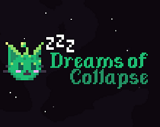
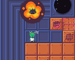
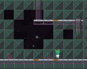

GMTK Game Jam 2025, August 2025



Dreams of Collapse was made for the GMTK theme "Loop." It's a small
Spelunky-like infinite platformer in which you descend through levels
whilst resetting yourself back to the top to clear obstacles.
Made in Godot with C#.
Lavender Vanina (that's me!) - Design, Programming, Lead Art, Level Design
Alex Sadovnikov - Design, Programming, Lead Sound
Stelios Potamousis - Testing, Additional Level Design